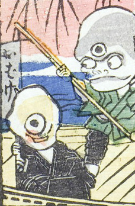

一つ目；ヒトツメ，三つ目；ミツメ，男；オトコ

一つ目と三つ目の化物。舟にのっている。三つ目の化物が棹を握っている。
著作者：一恵斎芳幾（歌川芳幾）／出典：親書誌：U426_nichibunken_0142：新板化物づくし；シンパンバケモノヅクシ／日付：2009／資源識別子：U426_nichibunken_0142_0026_0000
Copyright (c)2010- International Research Center for Japanese Studies, Kyoto, Japan. All rights reserved.